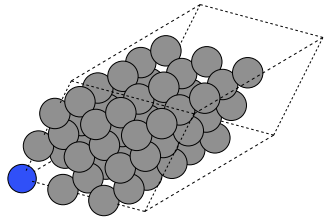

ASE - The Atomic Simulation Environment#

The Atomic Simulation Environment (ASE) is an open-source set of tools and Python modules for setting up, manipulating, running, visualizing and analyzing atomistic simulations. ASE can help you molecules and crystals, and then simulate them at different levels of theory (density functional theory, molecular dynamics, etc.). ASE can interface with a variety of simulation software platforms including VASP, Quantum ESPRESSO, Q-Chem, Gaussian, and others (see the full list) through tools called calculators. ASE can create input files, launch simulations, and parse the output.
ase has a vast set of modules and functions, giving it vast and powerful functionality. We will only scratch the surface in this brief introduction to ase.
Installation#
To use ASE, you must first install the ase Python module. You may use a command such as pip3 install ase to do this.
Usage#
To simulate a material or molecule in ASE, the workflow is typically as follows:
Build an ASE
Atomsobject to represent your molecule or materialUse an ASE
calculatorobject to perform a simulation and parse/visualize the results.
Note
Performing atomistic simulations are beyond the scope of this discussion. We will show you how to create an Atoms object. More information about performing simulations using Atoms objects and calculator objects may be found on the ASE documentation page Atoms and Calculators.
ase.Atoms Objects#
In ase, we use an Atoms object for an atomistic description of a material system. An Atoms object is actually a collection of Atom objects, each of which describes an atom, with member data such as symbol (string), position (a 3-element tuple of Cartesian coordinates, in Angstroms). Other atomic properties could be specified, such as mass, charge, etc.
Building Simple Molecules#
Python code that uses ase must include an import statement that imports the ase tools (functions or classes) you want to use. Here, we will:
use the
ase.build.molecule()function to construct a water molecule, andmake a representation of the molecule using the
ase.visualize.view()
from ase.build import molecule
from ase.visualize import view
"""
Build an ase.Atoms object to represent a water molecule.
We use the molecule() function to do this, and we specify
the chemical formula for water.
"""
water = molecule('H2O')
# The view() function provides an interactive, 3D visualization
view(water, viewer='x3d')
The molecule() function is provided as a simple way to build an Atoms object. Here, a molecule is specified using a Python string containing a chemical formula, and only a very limited set of molecules are supported. The list of available molecules is found in the ase.collections.g2.names list:
from ase.collections import g2
# print the ase.collections.g2.names list
print(g2.names)
['PH3', 'P2', 'CH3CHO', 'H2COH', 'CS', 'OCHCHO', 'C3H9C', 'CH3COF', 'CH3CH2OCH3', 'HCOOH', 'HCCl3', 'HOCl', 'H2', 'SH2', 'C2H2', 'C4H4NH', 'CH3SCH3', 'SiH2_s3B1d', 'CH3SH', 'CH3CO', 'CO', 'ClF3', 'SiH4', 'C2H6CHOH', 'CH2NHCH2', 'isobutene', 'HCO', 'bicyclobutane', 'LiF', 'Si', 'C2H6', 'CN', 'ClNO', 'S', 'SiF4', 'H3CNH2', 'methylenecyclopropane', 'CH3CH2OH', 'F', 'NaCl', 'CH3Cl', 'CH3SiH3', 'AlF3', 'C2H3', 'ClF', 'PF3', 'PH2', 'CH3CN', 'cyclobutene', 'CH3ONO', 'SiH3', 'C3H6_D3h', 'CO2', 'NO', 'trans-butane', 'H2CCHCl', 'LiH', 'NH2', 'CH', 'CH2OCH2', 'C6H6', 'CH3CONH2', 'cyclobutane', 'H2CCHCN', 'butadiene', 'C', 'H2CO', 'CH3COOH', 'HCF3', 'CH3S', 'CS2', 'SiH2_s1A1d', 'C4H4S', 'N2H4', 'OH', 'CH3OCH3', 'C5H5N', 'H2O', 'HCl', 'CH2_s1A1d', 'CH3CH2SH', 'CH3NO2', 'Cl', 'Be', 'BCl3', 'C4H4O', 'Al', 'CH3O', 'CH3OH', 'C3H7Cl', 'isobutane', 'Na', 'CCl4', 'CH3CH2O', 'H2CCHF', 'C3H7', 'CH3', 'O3', 'P', 'C2H4', 'NCCN', 'S2', 'AlCl3', 'SiCl4', 'SiO', 'C3H4_D2d', 'H', 'COF2', '2-butyne', 'C2H5', 'BF3', 'N2O', 'F2O', 'SO2', 'H2CCl2', 'CF3CN', 'HCN', 'C2H6NH', 'OCS', 'B', 'ClO', 'C3H8', 'HF', 'O2', 'SO', 'NH', 'C2F4', 'NF3', 'CH2_s3B1d', 'CH3CH2Cl', 'CH3COCl', 'NH3', 'C3H9N', 'CF4', 'C3H6_Cs', 'Si2H6', 'HCOOCH3', 'O', 'CCH', 'N', 'Si2', 'C2H6SO', 'C5H8', 'H2CF2', 'Li2', 'CH2SCH2', 'C2Cl4', 'C3H4_C3v', 'CH3COCH3', 'F2', 'CH4', 'SH', 'H2CCO', 'CH3CH2NH2', 'Li', 'N2', 'Cl2', 'H2O2', 'Na2', 'BeH', 'C3H4_C2v', 'NO2']
Let’s do this again for a formic acid molecule. Additionally, we will also print the x, y, and z coordinates of each atom.
# construct a formic acid molecule
atoms = molecule('HCOOH')
"""
Let's also print the symbol and coordinates of each atom.
"""
print('Show atomic coordinates:\n')
for X in atoms:
x, y, z = X.position
print('{0}\n x: {1} Ang.\n y: {2} Ang.\n z: {3} Ang.'.format(X.symbol,
x, y, z)
)
Show atomic coordinates:
O
x: -1.040945 Ang.
y: -0.436432 Ang.
z: 0.0 Ang.
C
x: 0.0 Ang.
y: 0.423949 Ang.
z: 0.0 Ang.
O
x: 1.169372 Ang.
y: 0.103741 Ang.
z: 0.0 Ang.
H
x: -0.64957 Ang.
y: -1.335134 Ang.
z: 0.0 Ang.
H
x: -0.377847 Ang.
y: 1.452967 Ang.
z: 0.0 Ang.
We can still make an interactive, 3D visualization:
"""
The view() function should occur last for an interactive result.
"""
# 3D visualization
view(atoms, viewer='x3d')
Having constructed an ase.Atoms object to represent water molecule, we could create a calculator object to run a simulation.
Building Complex molecules#
If you want to go beyond the simple molecules ASE can create using the moleucles() function, you may use other strategies:
Construct a molecule from a structure file (
*.cif,*.xyz, etc.)Read the structure from simulation output
Obtain a structure from a molecular database
To read a structure from a file, use the read() function from the ase.io module. This module allows ASE to read from and write to files containing information about materials (documentation).
Building Simple Crystals - Bulk Silicon#
We will start with a simple (bulk) silicon crystal using the bulk() function in the ase.build module.
from ase.build import bulk
from ase.io import write # helps us save an image
atoms = bulk('Si')
"""
This is a easy way to make a simple (static) visualization.
"""
write('silicon_basis.png', atoms, show_unit_cell=2)
The static image of the silicon crystal (the two-atom basis for the FCC crystal) is given below.

We can also make an interactive 3D image:
view(atoms, viewer='x3d')
Building a 2D System - a MXene#
The ase.build module provides functions for building 2D structures. For example:
graphene_nanoribbon()may be used to make graphene nanoribbons and graphene sheets.mx2()may be used to build MXene and transition metal dichalcogenide (TMD) monolayers.
Here, we will make a MXene.
from ase.build import mx2
from ase.io import write
from ase.visualize import view # 3D interactive image
# This forms a primitive unit cell
Ti2C = mx2('CTi2', vacuum = 15) # unit cell
"""
We can also build a sheet. We form a supercell by repeating the unit cell
3x in the x and y directions, and only one time in the z direction.
"""
# Static image of the unit cell
rotation = '0z,-60x'
write('Ti2C_unit_cell.png', Ti2C, show_unit_cell=2, rotation=rotation)
As static image of the unit cell is given below. Since a structure like this would likely be used in a DFT calculation, and DFT calculations often have periodic boundary conditions, the unit cell features a large air gap to keep separate the main sheet from its images in the z direction.

Now, we form a supercell by repeating the unit cell in space. To repeat the primitive cell, described by the Ti2C object, we simply multiply Ti2C by a 3-element tuple. The three integers (nx, ny, nz) repeat the unit cell in the x, y, and z directions, respectively.
sheet = Ti2C*(3,3,1) #
# Static image of the sheet
write('Ti2C_sheet.png', sheet, show_unit_cell=2, rotation=rotation)
# I've suppressed the interactive 3D view
# view(Ti2C, viewer='x3d', repeat=(4,4,1))
Additionally, the static image of the sheet is given below:

Building a 1D System - a Carbon Nanotube#
A next example will be a carbon nanotube. ASE has functionality to build such structures in the nanotube() function.
from ase.build import nanotube
from ase.io import write # helps us save an image
from ase.visualize import view # 3D interactive image
atoms = nanotube(6, 0, length=4)
"""
This is a easy way to make a simple (static) visualization.
"""
orientation='12y,-15z'
write('nanotube.png', atoms, show_unit_cell=2, rotation=orientation)
The static image of the nanotube is given below.

An interactive 3D image of the carbon nanotube is shown below.
# Interactive 3D visualization
view(atoms, viewer='x3d')
Building Complex Crystals#
The structures the ase.build module allows you to construct are fairly basic. For more advanced structures, we may follow the same strategies as for the complex molecules:
Construct a crystal structure from a structure file (
*.cif,*.xyz, etc.)Read the structure from simulation output
Obtain a structure from a materials database
To read a structure from a file, use the read() function from the ase.io module. This module allows ASE to read from and write to files containing information about materials (documentation).
Exercises#
Exercise 1: Form a nitrogen-vacancy center in a diamond crystal.
The nitrogen vacancy (NV) center in diamond is a point defect that can support a room-temperature qubit system. Write Python code to form a NV center in a diamond supercell, by doing the following:
Define a diamond primitive unit cell using
ase.build.bulk().Use the primitive unit cell to form a supercell that is at least a three-by-three-by-three supercell.
Make a nitrogen substitution by swapping one C atom for a N atom.
Remove a C atom adjacent to the N substitution.
Provide a static and an interactive visualization of your crystal.
Below is one example your result could resemble. Here, I have performed a substitution on the atom at the origin, and I have removed an adjacent atom.

Hints:
You can substitute the \(k\)-th atom of an
ase.Atomsobject simply by reassigning its atomic symbol. For example, given anAtomsobjectsi_crystalrepresenting a pristine Si crystal, we can transform the \(k\)-th atom to a C atom using code like this:
si_crystal[k].symbol = 'C'
See the (documentation) for the
ase.Atomsclass to learn how to delete atoms from anAtomsobject.
A successfully-formed NV center would still require structural optimization.
Solutions#
Show code cell content
from ase.build import bulk
diamond = bulk('C', 'diamond')
crystal = diamond*(3,3,3)
crystal[0].symbol = 'N' # it's in-silico alchemy!
del crystal[1]
"""
Static visualization.
"""
orientation='12y,-15z'
write('nv_center.png', crystal, show_unit_cell=2, rotation=orientation)
# Interactive 3D visualization
view(crystal, viewer='x3d')